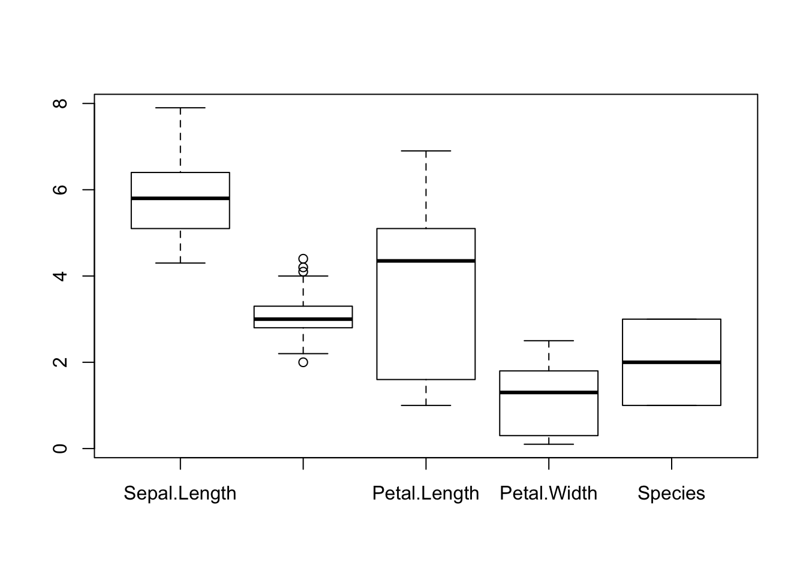

Exploration des données avec R
1 Objectifs
La visualisation permet d’explorer efficacement une série de données.
- Structure et types de variables
- Exploration des variables numériques
- Exploration des variables catégoriques
2 Structure des données
2.1 Types de variables
dim(iris)## [1] 150 5names(iris)## [1] "Sepal.Length" "Sepal.Width" "Petal.Length" "Petal.Width"
## [5] "Species"str(iris)## 'data.frame': 150 obs. of 5 variables:
## $ Sepal.Length: num 5.1 4.9 4.7 4.6 5 5.4 4.6 5 4.4 4.9 ...
## $ Sepal.Width : num 3.5 3 3.2 3.1 3.6 3.9 3.4 3.4 2.9 3.1 ...
## $ Petal.Length: num 1.4 1.4 1.3 1.5 1.4 1.7 1.4 1.5 1.4 1.5 ...
## $ Petal.Width : num 0.2 0.2 0.2 0.2 0.2 0.4 0.3 0.2 0.2 0.1 ...
## $ Species : Factor w/ 3 levels "setosa","versicolor",..: 1 1 1 1 1 1 1 1 1 1 ...attributes(iris)## $names
## [1] "Sepal.Length" "Sepal.Width" "Petal.Length" "Petal.Width"
## [5] "Species"
##
## $row.names
## [1] 1 2 3 4 5 6 7 8 9 10 11 12 13 14 15 16 17
## [18] 18 19 20 21 22 23 24 25 26 27 28 29 30 31 32 33 34
## [35] 35 36 37 38 39 40 41 42 43 44 45 46 47 48 49 50 51
## [52] 52 53 54 55 56 57 58 59 60 61 62 63 64 65 66 67 68
## [69] 69 70 71 72 73 74 75 76 77 78 79 80 81 82 83 84 85
## [86] 86 87 88 89 90 91 92 93 94 95 96 97 98 99 100 101 102
## [103] 103 104 105 106 107 108 109 110 111 112 113 114 115 116 117 118 119
## [120] 120 121 122 123 124 125 126 127 128 129 130 131 132 133 134 135 136
## [137] 137 138 139 140 141 142 143 144 145 146 147 148 149 150
##
## $class
## [1] "data.frame"# install.packages("Hmisc")
library(Hmisc)
describe(iris)## iris
##
## 5 Variables 150 Observations
## ---------------------------------------------------------------------------
## Sepal.Length
## n missing unique Info Mean .05 .10 .25 .50
## 150 0 35 1 5.843 4.600 4.800 5.100 5.800
## .75 .90 .95
## 6.400 6.900 7.255
##
## lowest : 4.3 4.4 4.5 4.6 4.7, highest: 7.3 7.4 7.6 7.7 7.9
## ---------------------------------------------------------------------------
## Sepal.Width
## n missing unique Info Mean .05 .10 .25 .50
## 150 0 23 0.99 3.057 2.345 2.500 2.800 3.000
## .75 .90 .95
## 3.300 3.610 3.800
##
## lowest : 2.0 2.2 2.3 2.4 2.5, highest: 3.9 4.0 4.1 4.2 4.4
## ---------------------------------------------------------------------------
## Petal.Length
## n missing unique Info Mean .05 .10 .25 .50
## 150 0 43 1 3.758 1.30 1.40 1.60 4.35
## .75 .90 .95
## 5.10 5.80 6.10
##
## lowest : 1.0 1.1 1.2 1.3 1.4, highest: 6.3 6.4 6.6 6.7 6.9
## ---------------------------------------------------------------------------
## Petal.Width
## n missing unique Info Mean .05 .10 .25 .50
## 150 0 22 0.99 1.199 0.2 0.2 0.3 1.3
## .75 .90 .95
## 1.8 2.2 2.3
##
## lowest : 0.1 0.2 0.3 0.4 0.5, highest: 2.1 2.2 2.3 2.4 2.5
## ---------------------------------------------------------------------------
## Species
## n missing unique
## 150 0 3
##
## setosa (50, 33%), versicolor (50, 33%)
## virginica (50, 33%)
## ---------------------------------------------------------------------------2.2 Echantillons
iris[1:3,]## Sepal.Length Sepal.Width Petal.Length Petal.Width Species
## 1 5.1 3.5 1.4 0.2 setosa
## 2 4.9 3.0 1.4 0.2 setosa
## 3 4.7 3.2 1.3 0.2 setosahead(iris,3)## Sepal.Length Sepal.Width Petal.Length Petal.Width Species
## 1 5.1 3.5 1.4 0.2 setosa
## 2 4.9 3.0 1.4 0.2 setosa
## 3 4.7 3.2 1.3 0.2 setosatail(iris,3)## Sepal.Length Sepal.Width Petal.Length Petal.Width Species
## 148 6.5 3.0 5.2 2.0 virginica
## 149 6.2 3.4 5.4 2.3 virginica
## 150 5.9 3.0 5.1 1.8 virginica2.3 Affichage DataTables
Si la taille des données n’est pas excessivement grande, on peut l’afficher grâce au package DT.
# install.packages("DT")
library(DT)
datatable(iris)3 Variables numériques
3.1 Résumé statistique
summary(iris)## Sepal.Length Sepal.Width Petal.Length Petal.Width
## Min. :4.300 Min. :2.000 Min. :1.000 Min. :0.100
## 1st Qu.:5.100 1st Qu.:2.800 1st Qu.:1.600 1st Qu.:0.300
## Median :5.800 Median :3.000 Median :4.350 Median :1.300
## Mean :5.843 Mean :3.057 Mean :3.758 Mean :1.199
## 3rd Qu.:6.400 3rd Qu.:3.300 3rd Qu.:5.100 3rd Qu.:1.800
## Max. :7.900 Max. :4.400 Max. :6.900 Max. :2.500
## Species
## setosa :50
## versicolor:50
## virginica :50
##
##
## quantile(iris[,1])## 0% 25% 50% 75% 100%
## 4.3 5.1 5.8 6.4 7.93.2 Histogrammes
hist(iris[,1])
3.3 Boxplot
boxplot(iris)
boxplot(Sepal.Length~Species,data=iris)
4 Variables catégoriques
5 Table à une entrée
table(iris$Species)##
## setosa versicolor virginica
## 50 50 50pie(table(iris$Species))
barplot(table(iris$Species))
library(MASS)
head(Insurance)## District Group Age Holders Claims
## 1 1 <1l <25 197 38
## 2 1 <1l 25-29 264 35
## 3 1 <1l 30-35 246 20
## 4 1 <1l >35 1680 156
## 5 1 1-1.5l <25 284 63
## 6 1 1-1.5l 25-29 536 84str(Insurance)## 'data.frame': 64 obs. of 5 variables:
## $ District: Factor w/ 4 levels "1","2","3","4": 1 1 1 1 1 1 1 1 1 1 ...
## $ Group : Ord.factor w/ 4 levels "<1l"<"1-1.5l"<..: 1 1 1 1 2 2 2 2 3 3 ...
## $ Age : Ord.factor w/ 4 levels "<25"<"25-29"<..: 1 2 3 4 1 2 3 4 1 2 ...
## $ Holders : int 197 264 246 1680 284 536 696 3582 133 286 ...
## $ Claims : int 38 35 20 156 63 84 89 400 19 52 ...table(Insurance[,"District"])##
## 1 2 3 4
## 16 16 16 16table(Insurance[,"Group"])##
## <1l 1-1.5l 1.5-2l >2l
## 16 16 16 16table(Insurance[,"Age"])##
## <25 25-29 30-35 >35
## 16 16 16 166 Table à deux entrées
table(Insurance[,c("District","Group")])## Group
## District <1l 1-1.5l 1.5-2l >2l
## 1 4 4 4 4
## 2 4 4 4 4
## 3 4 4 4 4
## 4 4 4 4 4Copyright © 2016 DatavISUP